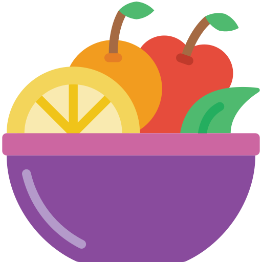

.png)
Some features of Fruit Shop :
(1) Variety of Fresh Fruits

Fruits: Apples, pears, citrus, stone fruit, tropical fruits, berries, melons, tomatoes, and avocados.
(2) Quality and Freshness
1. Appearance
Color: Fresh fruits should have vibrant, natural colors. Dull or faded colors can indicate that the fruit is overripe or has been stored for too long.
2. Texture
Firmness: Depending on the fruit, freshness can often be gauged by its firmness. For instance, a fresh apple should be crisp, while a fresh peach should yield slightly to pressure.
Juiciness: Fresh fruits, like citrus, watermelon, and grapes, will be juicy and full of liquid. Dried-out fruits may have lost some of their freshness.
(3) Cleanliness
1. Washing Fruits Before Eating: Always wash fruits under running water to remove dirt, pesticides, and bacteria. Even if you plan to peel them, like bananas or oranges, it’s a good idea to rinse them first to avoid transferring germs to the fruit’s flesh.
2. Using Clean Water Cold Water: Most fruits can be washed under cold, running water.
(4) Customer Services
1. Friendly and Knowledgeable Staff Engagement: Staff should greet customers warmly and offer assistance in selecting fruits. They should be approachable and ready to answer any questions. Product Knowledge: Knowledgeable staff can provide advice on fruit ripeness, seasonality, and how to store or prepare different types of fruit. They should be able to recommend alternatives if a particular fruit isn’t available.
(5) Packaging Options
1. Plastic Bags Common Use: Often used for bulk purchases of fruits like apples, oranges, or bananas.
2. Cardboard Boxes Common Use: Often used for bulk packaging of fruits like apples, peaches, or citrus. Cardboard is also used for shipping larger quantities of fruits.
(6) Clean,Well-Lit Environment
1. Clean Store Environment Floor and Surfaces: Floors, counters, and shelves should be regularly cleaned to prevent the buildup of dirt, debris, or potential contaminants. Fruits are often exposed to these surfaces, and cleanliness helps avoid contamination from bacteria or mold.
Handling Spoiled or Damaged Fruit Quick Removal: Any spoiled, overripe, or damaged fruit should be quickly removed from the display to prevent contamination of other fruits. These fruits can either be composted or disposed of properly.